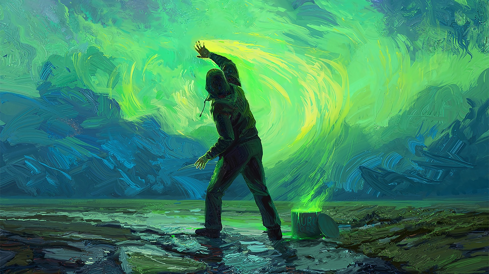

The Mysteries Unveiled: Journeying into the Enigma of the Bermuda Triangle
shiva prasad

Explore BermudaOfTriangle
Introduction
The Bermuda Triangle, also known as the Devil's Triangle, has captivated the imaginations of people around the world for decades. Situated in the western part of the North Atlantic Ocean, this triangular area is notorious for its alleged disappearances of ships and aircraft. Countless theories and legends have been woven around this enigmatic region, raising questions about its true nature and the forces that may be at play. Join us as we embark on an exploration of the Bermuda Triangle, attempting to separate fact from fiction and shed light on the mysteries that have intrigued us for so long.
- The Geographical
The Bermuda Triangle encompasses an area roughly bounded by Miami, Bermuda, and Puerto Rico. This triangular region spans approximately 500,000 square miles, making it an expansive and compelling subject of study. While the boundaries may vary slightly depending on different interpretations, the overall area remains constant.
- Historical Disappearances:
One of the key factors that have contributed to the fame of the Bermuda Triangle are the numerous reported disappearances of ships and aircraft over the years. We delve into some of the most notable incidents, such as the mysterious disappearance of Flight 19 in 1945, where five U.S. Navy torpedo bombers vanished without a trace. Additionally, we examine the vanishing of the SS Marine Sulphur Queen in 1963 and the unsolved case of the USS Cyclops in 1918, among others. By examining these incidents, we aim to uncover patterns and potential explanations for these disappearances
- Theories
Numerous theories have emerged over time to explain the phenomena occurring within the Bermuda Triangle. We discuss some of the most prevalent ones, including natural explanations such as unpredictable weather patterns, strong currents, and geological features. We also explore more controversial theories involving extraterrestrial activity, underwater civilizations, and the existence of a time-space warp. As we navigate through these theories, we evaluate the scientific evidence and consider the plausibility of each explanation.
- Scientific Investigations:
Over the years, researchers and scientists have conducted various studies and investigations in an attempt to demystify the Bermuda Triangle. We delve into these scientific endeavors, examining the findings and conclusions drawn from these rigorous studies. From oceanic research vessels to advanced sonar mapping, we explore the tools and techniques employed to uncover the truth behind the Bermuda Triangle's mysteries.
- Debunking Myths and
In our quest for understanding, we also address some of the myths and legends that have perpetuated over time. We debunk popular misconceptions surrounding the Bermuda Triangle, providing rational explanations for phenomena that were once attributed to supernatural or paranormal causes. Separating fact from fiction is crucial in unraveling the truth behind this perplexing region.
Conclusion:
The Bermuda Triangle continues to be an enigma, capturing the fascination of both skeptics and believers alike. As we conclude our exploration, we reflect on the journey we undertook to understand this mysterious area. While some aspects of the Bermuda Triangle may remain unexplained, our investigation sheds light on the importance of critical thinking, scientific inquiry, and the pursuit of knowledge. Perhaps the greatest mystery lies not within the Bermuda Triangle itself, but in the human desire to unravel the unexplained and seek answers to the unknown.